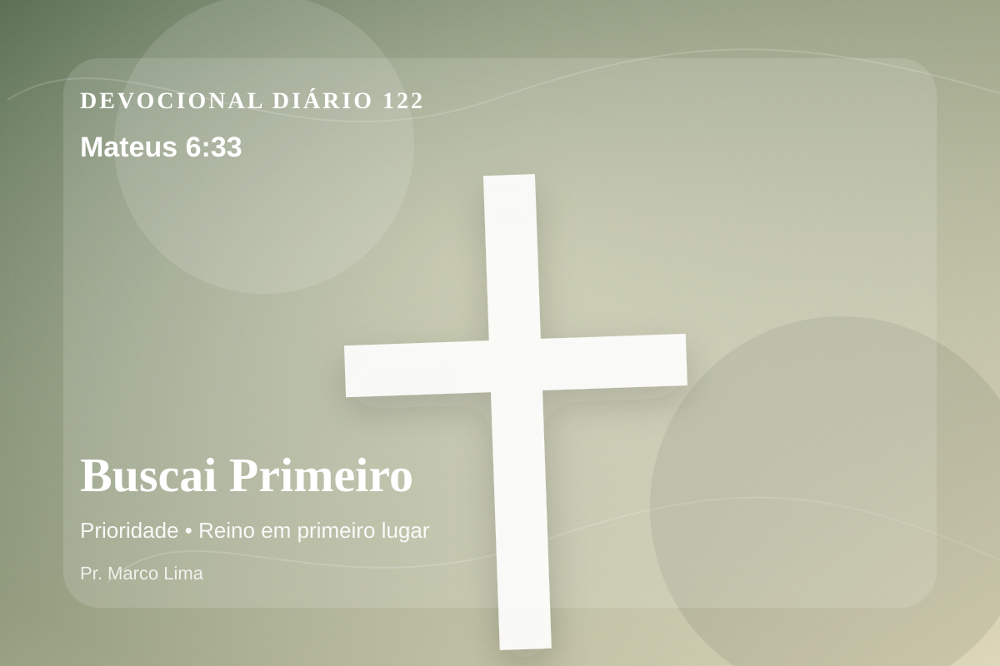

Buscai Primeiro
Mas buscai primeiro o seu reino e a sua justiça, e todas estas coisas vos serão acrescentadas.
Reflexão
A Palavra de hoje não é apenas uma mensagem bonita; é um chamado de Deus para que a vida inteira se renda a Cristo. No dia 122 do plano anual, o tema de prioridade deve levar você a olhar para Cristo, não apenas para si mesmo. Este tema aponta para a maneira como Deus forma o coração do Seu povo por meio da Palavra. A aplicação correta não nasce de frases soltas, mas de uma leitura reverente, contextual e obediente do texto bíblico.
A Escritura ensina que Deus não procura aparência religiosa, mas arrependimento sincero, fé obediente e um coração disposto a ser governado por Jesus. A reflexão cristã não termina em pensamento positivo; ela conduz ao Senhorio de Jesus, à cruz, à ressurreição e à nova vida que o Espírito Santo produz no coração.
Aprenda esta verdade com simplicidade: Deus não veio apenas ajustar alguns hábitos, mas resgatar a pessoa inteira. O pecado separa, engana e endurece; a graça de Cristo perdoa, reconcilia e ensina um novo caminho. Quem crê em Jesus não recebe licença para continuar igual, mas poder para nascer de novo e viver como filho de Deus.
Este é o evangelho: a salvação não nasce do desempenho humano, mas da obra perfeita de Cristo. Ele tomou sobre Si a culpa do pecado, venceu a morte e chama cada pessoa a responder com arrependimento e fé.
O convite ao arrependimento é urgente e amoroso. Não endureça o coração. Confesse aquilo que tem afastado você do Senhor, abandone a falsa segurança e entregue sua vida a Cristo.
Cristo não chama você para uma religião sem vida, mas para reconciliação com Deus. Creia em Jesus, entregue seu coração a Ele e receba pela graça o perdão que você jamais conseguiria comprar.
Aplicação Prática
- Leia Mateus 6:33 lentamente e destaque uma palavra ou expressão central do texto.
- Confesse a Deus um pecado, resistência ou frieza espiritual que esta Palavra revelou.
- Declare sua fé em Jesus Cristo e pratique hoje uma atitude concreta de arrependimento e obediência.
Para Orar
Senhor Deus, eu recebo a Tua Palavra em Mateus 6:33 com reverência. Reconheço que preciso de arrependimento, perdão e nova vida. Creio que Jesus Cristo morreu pelos meus pecados e ressuscitou para me salvar. Lava meu coração, governa minha vida e conduz-me em obediência simples ao Teu evangelho. Em nome de Jesus. Amém.
{kind=link}